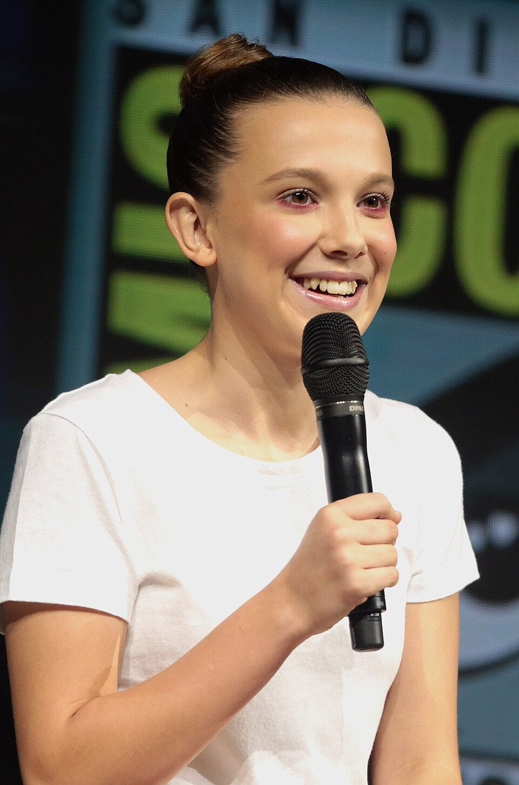
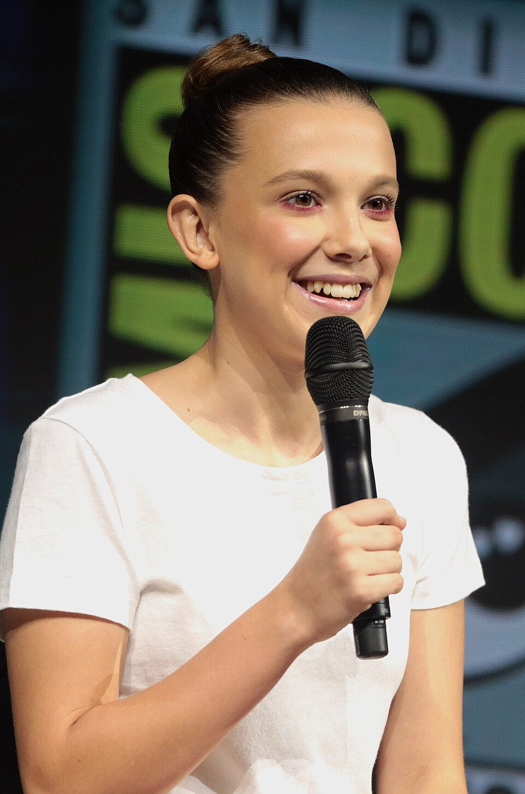

Stranger Things
Stranger Things é uma série de televisão via streaming estadunidense dos gêneros ficção científica, terror, suspense e drama adolescente, criada, escrita e dirigida pelos irmãos Matt e Ross Duffer para a plataforma Netflix. Além dos Irmãos Duffer, Shawn Levy e Dan Cohen são também os produtores executivos. A série apresenta em seu elenco principal os nomes de Winona Ryder, David Harbour, Finn Wolfhard, Millie Bobby Brown, Gaten Matarazzo, Caleb McLaughlin, Noah Schnapp, Natalia Dyer, Charlie Heaton, Joe Keery, Cara Buono e Matthew Modine, enquanto Sadie Sink, Dacre Montgomery, Sean Astin, Paul Reiser, Maya Hawke, Priah Ferguson, Brett Gelman, Jamie Campbell Bower, Linda Hamilton e Nell Fisher foram incluídos no elenco em temporadas posteriores.
A série estreou em 15 de julho de 2016 e permaneceu sendo lançada até 31 de dezembro de 2025. A primeira temporada se passa na cidade fictícia de Hawkins, Estados Unidos, durante a década de 1980, quando um menino de doze anos chamado Will Byers desaparece misteriosamente. Pouco depois, Onze, uma garota aparentemente fugitiva com poderes telecinéticos, conhece Mike, Dustin e Lucas, amigos de Will, e os ajuda na busca por Will.
A segunda temporada estreou em 27 de outubro de 2017 e se passa um ano após os eventos da primeira temporada. É abordado as tentativas dos personagens de retornar à normalidade e das consequências que persistem desde o ano anterior, onde Will fica com sequelas do Mundo Invertido. A terceira temporada estreou em 4 de julho de 2019 e é ambientada no verão americano de 1985, onde os personagens precisam lidar com o início da adolescência e de novos eventos sobrenaturais após a abertura de um shopping na cidade e a chegada de uma perigosa equipe russa que planeja abrir o portal do Mundo Invertido.
Em 30 de setembro de 2019, a Netflix renovou a série para uma quarta temporada, posteriormente a Netflix confirmou a estreia da quarta temporada, dividida em 2 volumes, que estrearam em 27 de maio 2022 e 1 de julho de 2022. Também foi confirmado que a quinta temporada seria a última da série. No dia 31 de maio de 2025, a Netflix publicou as datas de lançamento da quinta e última temporada da série, que será dividida em 3 volumes. O primeiro saiu em 26 de novembro de 2025, o segundo no dia 25 de dezembro e o episódio final em 31 de dezembro do mesmo ano.
Os Irmãos Duffer desenvolveram a premissa da série em meados de 2015, e no roteiro original, o projeto se chamaria Montauk, e seria ambientado na cidade de mesmo nome localizada em Nova Iorque, abordando as teorias da conspiração envolvendo os experimentos secretos do governo americano em uma base militar na cidade no início da década de 1980. Após a definição do roteiro, os Irmãos Duffer incluíram várias referências aos elementos culturais daquela década, como filmes de ficção científica, terror sobrenatural e ação e aventura, bem como videogames, animes e música, além de inúmeras referências a obras de Steven Spielberg, John Carpenter e Stephen King, considerados as grandes inspirações dos Irmãos Duffer para a realização do projeto. Eles também se inspiraram em estranhos experimentos que aconteceram durante a Guerra Fria e em teorias da conspiração do mundo real envolvendo experimentos secretos do governo.
Após seu lançamento, Stranger Things recebeu aclamação do publico e da crítica especializada, que elogiaram a caracterização, ritmo, atmosfera, atuações, trilha sonora, direção, roteiro e homenagens a filmes do gênero da década de 1980. Devido sua popularidade, a série acabou gerando alguns produtos, como livros, brinquedos, videogames e histórias em quadrinhos. A série também recebeu vários prêmios e indicações em premiações, como Emmy Awards, Globo de Ouro, British Academy Television Award, entre outros.
A série se expandiu para uma franquia multimídia, incluindo um spin-off animado, Stranger Things: Tales from '85, e uma peça teatral prelúdio de 2023 no West End, Stranger Things: The First Shadow. Também inspirou diversos livros, quadrinhos, produtos derivados, uma loja pop-up e um jogo de tabuleiro de Dungeons and Dragons baseado na série.
Premissas
1ª temporada (2016)
Em novembro de 1983, o estudante Will Byers é abduzido por uma criatura de uma realidade alternativa chamada "Mundo Invertido", causando mistério e pavor aos habitantes de Hawkins, Indiana. Sua mãe, Joyce Byers, tenta encontrar seu paradeiro com a ajuda do xerife Jim Hopper, enquanto Mike Wheeler, Dustin Henderson e Lucas Sinclair fazem outra investigação para encontrá-lo, porém são surpreendidos quando uma estranha garota com poderes telecinéticos chamada Onze aparece na cidade. Onze é uma fugitiva do Laboratório Nacional de Hawkins, localizado nas proximidades, que faz ostensivamente pesquisas científicas para o Departamento de Energia dos Estados Unidos e realiza secretamente experimentos paranormais e sobrenaturais em humanos.
2ª temporada (2017)
Em outubro de 1984, Will foi resgatado, mas poucos sabem dos detalhes dos acontecimentos. Quando é descoberto que Will ainda está sendo influenciado por entidades do Mundo Invertido, principalmente pela figura de uma criatura chamada Devorador de Mentes, seus amigos e familiares se juntam para salvá-lo da criatura e fechar o portal do Mundo Invertido.
3ª temporada (2019)
Em julho de 1985, as crianças precisam lidar com os dilemas da adolescência, como romances e amizades. Um dos novos pontos da cidade é o shopping Starcourt Mall, que começa a atrair atenção dos moradores de Hawkins, causando o fechamento de várias outras lojas. Hopper fica cada vez mais preocupado com o relacionamento de Onze e Mike enquanto ainda tenta cuidar de Joyce. Sem o conhecimento do governo, um laboratório secreto soviético está escondido nas profundezas do shopping, tentando abrir o portal do Mundo Invertido, permitindo que as entidades de lá possuam os moradores de Hawkins, criando um novo horror para lidar.
4ª temporada (2022)
Em março de 1986, oito meses depois do conflito de Starcourt, Onze e Will estão separados pela primeira vez de seu grupo de amigos e tentam lidar com as complexidades do ensino médio na Califórnia. Enquanto isso, Hawkins foi tomada por um rastro de terror: uma série de assassinatos cruéis de jovens deixam os moradores assustados. As mortes estão ligadas a uma nova ameça sobrenatural: Vecna. Esse ser monstruoso e poderoso pode revelar mistérios até então não revelados do Mundo Invertido. Sua aparição fará com que todos do grupo trabalhem em conjunto, mesmo com a dura distância que os separam, para proteger aqueles que amam.
5ª temporada (2025)
Em novembro de 1987, Hawkins está marcada pela abertura das fendas, e nossos heróis estão unidos por um único objetivo: encontrar e matar Vecna. Mas ele desapareceu e seu paradeiro é desconhecido. Para complicar a missão, o governo colocou a cidade em quarentena militar e intensificou a busca por Onze, forçando-a a se esconder novamente. À medida que o aniversário do desaparecimento de Will se aproxima, um medo pesado e familiar se aproxima. A batalha final se aproxima e com ela, uma escuridão mais poderosa e mortal do que qualquer coisa que já enfrentaram. Para acabar com esse pesadelo, eles precisarão de todos unidos, uma última vez.
Elenco e personagens
A lista abaixo contém os atores que foram creditados como regulares da série nos créditos de abertura. Atores que são apenas recorrentes e convidados são listados nas páginas individuais das temporadas.
- Winona Ryder como Joyce Byers: a mãe de Will e Jonathan Byers. Ela é divorciada de Lonnie Byers. Seu filho Will desaparece, iniciando a trama. Na segunda temporada, ela mantém um relacionamento com seu antigo colega de classe, Bob, embora ela e o delegado Hopper tenham sentimentos um pelo outro.
- David Harbour como Jim Hopper: delegado do Departamento de Polícia de Hawkins. Depois que sua filha, ainda criança, morreu de câncer, ele se divorciou e tornou-se alcoólatra. Ele demonstra sua responsabilidade e capacidade ao salvar o filho de Joyce, e ao adotar Onze como sua filha.
- Finn Wolfhard como Michael "Mike" Wheeler: filho de Karen e Ted Wheeler, irmão mais novo de Nancy, e um dos três filhos dos Wheeler. É um inteligente e consciente estudante, comprometido com seus amigos. Desenvolve sentimentos amorosos por Onze.
- Millie Bobby Brown como Onze / Jane Hopper: uma jovem que tem habilidades em telecinesia e um vocabulário limitado. Seu nome verdadeiro é Jane, filha de Terry Ives. Foi sequestrada e enviada para o Laboratório de Hawkins. É salva pelo amigos Mike, Dustin e Lucas e, ao final da segunda temporada, adotada pelo delegado Hopper. Desenvolve sentimentos amorosos por Mike.
- Gaten Matarazzo como Dustin Henderson: um dos amigos de Will. Sua displasia cleidocraniana faz com que ele tenha a língua presa. Na segunda temporada, ele está orgulhoso de seus novos dentes da frente, além de se apaixonar por Max.
- Caleb McLaughlin como Lucas Sinclair: um dos amigos de Will. Ele desconfia de Onze, mas depois se torna amigo dela. Na segunda temporada, ele é um dos interesses amorosos de Max e acaba se tornando seu namorado na terceira temporada. Ele se torna mais popular na quarta temporada por entrar para o time de basquete da Hawkins High, o que o coloca brevemente em conflito com seu grupo de amigos.
- Natalia Dyer como Nancy Wheeler: filha de Karen e Ted, irmã mais velha de Mike. Estudiosa e regrada, ela descobre um outro lado de sua personalidade quando começa a investigar o Laboratório de Hawkins e o sumiço de sua amiga Barbara. Vive um romance com Steve Harrington mas, ao terminar com ele, descobre uma paixão por Jonathan Byers.
- Charlie Heaton como Jonathan Byers: irmão mais velho de Will e filho de Joyce. Um adolescente tímido, auto-excluído na escola e aspirante a fotógrafo. É muito próximo de sua família, e se vê apaixonado por Nancy Wheeler.
- Cara Buono como Karen Wheeler: mãe de Nancy, Mike e da criança Holly.
- Matthew Modine como Martin Brenner (temporadas 1 e 4; convidado na temporada 2): o cientista encarregado do Laboratório Hawkins. Manipulativo e remoto, ele e sua equipe estão procurando por Onze.
- Noah Schnapp como William "Will" Byers (temporadas 2 – 5; recorrente na temporada 1): o filho de Joyce Byers e irmão de Jonathan, e um dos amigos de Mike. Foi capturado por um monstro do "Mundo Invertido", uma dimensão alternativa descoberta no Laboratório de Hawkins.
- Sadie Sink como Maxine "Max" Mayfield (temporada 2 – 5): uma menina que se muda para Hawkins, chamando a atenção de Dustin e Lucas - mais tarde, escolhendo Lucas. Tem um meio-irmão mais velho, Billy.
- Joe Keery como Steve Harrington (temporadas 2 – 5; recorrente na temporada 1): um estudante popular e mulherengo do ensino médio, que namora Nancy Wheeler. Se envolve no resgate de Will, o que o ajuda a evoluir sua personalidade.
- Dacre Montgomery como Billy Hargrove (temporadas 2 e 3; convidado na temporada 4): meio-irmão de Max. Violento, imprevisível e abusivo, ele desafia a popularidade de Steve Harrington.
- Sean Astin como Bob Newby (temporada 2; convidado na temporada 3): antigo colega de classe de Joyce e Hopper, mantém um relacionamento com Joyce e possui uma loja de eletrônicos.
- Paul Reiser como Sam Owens (temporadas 2 e 4; convidado na temporada 3): substituto de Brenner no Laboratório. Ele é comprometido com a pesquisa científica, mas empático com os moradores de Hawkins.
- Maya Hawke como Robin Buckley (temporadas 3 – 5): uma garota alternativa que trabalha junto de Steve Harrington na sorveteria do Shopping de Hawkins.
- Priah Ferguson como Erica Sinclair (temporadas 3 – 5; recorrente na temporada 2): irmã mais nova de Lucas Sinclair, teimosa e manipuladora.
- Brett Gelman como Murray Bauman (temporada 4; recorrente nas temporadas 2 e 3): um detetive conspiratório que investiga o sumiço de Barbara. É procurado por Nancy e Jonathan para ajuda-los, e acaba os unindo num relacionamento.
- Jamie Campbell Bower como Henry Creel / Um / Vecna (temporada 5, recorrente na temporada 4), um ser psíquico assassino do Mundo Invertido. Nascido como Henry Creel com habilidades sobrenaturais, ele assassinou a sua família e foi posteriormente colocado sob os cuidados de Brenner. Flashbacks na temporada 4 revelam que Onze o baniu para um espaço interdimensional quando tinha oito anos, onde ele ficou desfigurado e mais tarde emergiu no Mundo Invertido, acabando por assumir o controle da dimensão.
- Linda Hamilton como Dra. Kay (temporada 5), a líder dos militares que investigam as fendas em Hawkins e caçam Onze.
- Nell Fisher como Holly Wheeler (temporada 5, recorrente nas temporadas 1 – 4[a]), a irmã mais nova de Mike e Nancy, que na 5ª temporada, deixa de ser apenas uma presença de fundo e passa a ter mais destaque narrativo, aparecendo com maior frequência e sendo diretamente afetada pelos eventos finais ligados ao Mundo Invertido.
Episódios
| Temporada | Episódios | Data de lançamento | |
|---|---|---|---|
| 1 | 8 | 15 de julho de 2016 | |
| 2 | 9 | 27 de outubro de 2017 | |
| 3 | 8 | 4 de julho de 2019 | |
| 4 | 9 | 27 de maio de 2022 (Volume 1) e 1 de julho de 2022 (Volume 2) | |
| 5 | 8 | 26 de novembro de 2025 (Volume 1), 25 de dezembro de 2025 (Volume 2) e 31 de dezembro de 2025 (Volume 3) | |
Produção
Desenvolvimento
Stranger Things foi criado por Matt e Ross Duffer, conhecidos profissionalmente como The Duffer Brothers ("Irmãos Duffer"). Os dois terminaram de escrever e produzir seu filme de 2015 Hidden, que eles tentaram imitar no estilo de produções feitas por M. Night Shyamalan, no entanto, devido a mudanças na Warner Bros., sua distribuidora, o filme não teve um grande lançamento e os Irmãos Duffer não tinham certeza de seu futuro. Para sua surpresa, o produtor de televisão Donald De Line os abordou, impressionado com o roteiro de Hidden, e lhes ofereceu a oportunidade de trabalhar em episódios de Wayward Pines ao lado de Shyamalan. Os irmãos foram orientados por Shyamalan durante a produção do episódio, então, quando terminaram, sentiram que estavam prontos para produzir sua própria série de televisão.

Os Duffer montaram um roteiro que seria essencialmente semelhante ao episódio piloto real da série, juntamente com um livro de 20 páginas para ajudar na comprar da série por uma emissora. Eles mostraram a história para quinze redes de TV a cabo, todas as quais rejeitaram o roteiro com base no fato de que um enredo centrado em crianças não funcionaria, pedindo-lhes para transformá-lo em um programa infantil, ou retirassem as crianças como protagonista e concentrem-se na investigação de Hopper sobre o paranormal. No início de 2015, Dan Cohen, vice-presidente da 21 Laps Entertainment, trouxe o roteiro para seu colega Shawn Levy. Eles posteriormente convidaram os Duffer para seu escritório e compraram os direitos da série, dando aos irmãos autoria total. Depois de ler o piloto, o serviço de streaming Netflix comprou a temporada inteira por um valor não revelado.[36] Mais tarde, o programa foi anunciado para um lançamento planejado para 2016 na Netflix no início de abril de 2015. Os Duffer afirmaram que, quando foram lançados na Netflix, o serviço já havia sido reconhecido por sua programação, como House of Cards e Orange Is the New Black, com produtores conhecidos por trás deles, e eles estavam prontos para ir, dando uma chance a futuros produtores como eles. Os irmãos começaram a escrever a série e trouxeram Levy e Cohen como produtores executivos para começar o elenco.
"Montauk é um épico de terror de ficção científica de oito horas. Situado em Long Island em 1980 e inspirado nos clássicos sobrenaturais da época, exploramos a encruzilhada onde o ordinário encontra o extraordinário... Emocional, cinematográfico e baseado em personagens, "Montauk" é uma carta de amor à era de ouro de Steven Spielberg e Stephen King: um casamento de drama humano e medo sobrenatural".
—— Descrição original dos irmãos Duffer para Montauk
Originalmente, a série era conhecida como Montauk, já que o cenário do roteiro se passava em Montauk, Nova Iorque e cidades próximas em Long Island. Os irmãos escolheram Montauk por ter laços adicionais com o filme de Steve Spielberg, filme Jaws, onde Montauk foi usado para o cenário fictício de Amity Island. Depois de decidir mudar a narrativa da série para se passar na cidade fictícia de Hawkins, os irmãos sentiram que agora poderiam fazer coisas na cidade, como colocá-la em quarentena, que não conseguiam imaginar um local real. Com a mudança de local, eles tiveram que criar um novo título para a série sob a direção de Ted Sarandos, da Netflix, para que pudessem começar a comercializá-la para o público. Os irmãos começaram usando uma cópia do romance Firestarter, de Stephen King, para considerar a fonte e a aparência do título, e chegaram a uma longa lista de alternativas possíveis. Stranger Things surgiu porque soava semelhante a outro romance de King, Needful Things, embora Matt tenha notado que eles ainda tinham "muitas discussões acaloradas" sobre este título final. Para lançar a série, os Irmãos Duffer apresentaram imagens, filmagens e músicas de filmes da década de 1980 como ET, The Extra-Terrestrial, Close Encounters of the Third Kind, Poltergeist, Hellraiser, Stand by Me, Firestarter, A Nightmare on Elm Street e Jaws para definir o tom da série.
Com o sucesso crítico da primeira temporada após seu lançamento em julho de 2016, surgiram especulações sobre uma possível segunda temporada. Os Irmãos Duffer inicialmente pretendiam que Stranger Things fosse uma minissérie independente ou uma série antológica. Eles também consideraram definir uma potencial segunda temporada (que eles chamam de "sequela") no início dos anos 1990 e apresentando uma versão mais antiga dos personagens, juntamente com todos os novos personagens, que são atraídos por Hawkins após eventos sobrenaturais começarem a acontecer novamente. No entanto, após o lançamento da primeira temporada, eles perceberam que a simpatia dos personagens, principalmente das crianças, era fundamental para o sucesso da série, e decidiram definir a segunda temporada em 1984 e focar nos mesmos personagens. No final de julho, os Irmãos Duffer haviam feito um plano para uma temporada seguinte e receberam uma luz verde para criá-la e o CEO da Netflix, Reed Hastings, disse no início agosto que a empresa "seria tola" de não renovar Stranger Things para uma segunda temporada. Em 31 de agosto de 2016, a Netflix anunciou que havia renovado Stranger Things para uma segunda temporada de nove episódios, a ser lançada em 2017. Os Irmãos Duffer então revelaram que a série havia sido renovada para uma segunda temporada. Quanto à decisão de esperar mais de um mês após a estreia da primeira temporada para anunciar a renovação, Matt Duffer disse: "Na verdade, acabou dando certo porque chegou a esse ponto de inflexão. Acho que era isso que a Netflix tinha em mente fazer o tempo todo."
Os Irmãos Duffer escreveram a segunda temporada para combinar com a primeira, assim como um trabalho completo, estabelecendo elementos para avançar com temporadas adicionais se obtivessem uma luz verde para lançá-las futuramente. Enquanto a maior parte da história para a segunda temporada foi decidida antes da primeira temporada ir ao ar, os Duffer capturaram as reações do público da primeira temporada para ajustar alguns detalhes para a segunda temporada. Eles sabiam que não teriam o mesmo elemento de surpresa do público como quando a série foi ao ar novamente, e eles sabiam que os fãs queriam ver certos elementos, mas Ross disse "... o objetivo não é dar a todos o que eles pensam que querem. Eu não acho que eles realmente sabem o que querem." Os Duffer sentiram que a segunda temporada deveria ser tratada mais como uma sequência do que como uma continuação e, portanto, optaram por chamar a segunda temporada de Stranger Things 2. Essa abordagem era temida pela Netflix, pois a empresa acreditava que as sequências de filmes geralmente recebiam um rap ruim, mas os Duffer notaram que havia muitas sequências de sucesso que superaram o filme original, e eles se sentiram seguros com esse nome. Apesar de revelar os títulos dos episódios da temporada no comercial para "dar uma dica de onde estavam indo na segunda temporada sem revelar nada", Matt Duffer afirmou que alguns dos títulos mudariam, e que segundo ele havia algumas coisas que não queriam colocar porque achavam que iria revelar muito, e porque "as pessoas são espertas na internet". Matt disse: "Há vídeos feitos por fãs discutindo os títulos dos episódios.... em grande parte 'sobre como os títulos se relacionam com o enredo da temporada'." No início de outubro de 2017, os Irmãos Duffer revelaram os títulos finais para os seis primeiros episódios da temporada.
Levy observou em novembro de 2016 que ele e os Duffer Brothers já haviam começado a planejar uma possível terceira temporada, dizendo: "Não seremos pegos de surpresa e não queremos fazer coisas como no dia anterior. Nós fazemos, então estamos definitivamente otimistas e começamos a pensar no futuro." Os Irmãos Duffer anteciparam que a série teria de quatro a cinco temporadas para trabalhar. Eles desejam "um final realmente finito" enquanto a série permanece no auge do sucesso, de acordo com Matt, em vez de deixá-lo se arrastar indefinidamente. Em agosto de 2017, os Irmãos Duffer confirmaram que haveria uma terceira temporada, com a probabilidade de mais uma temporada depois disso, com Ross dizendo: "Achamos que seria uma coisa de quatro temporadas e depois sairíamos". No entanto, o produtor executivo Shawn Levy sugeriu mais tarde que quatro ou cinco temporadas no total eram possibilidades, afirmando que a verdade é que definitivamente vamos fazer quatro temporadas e há a possibilidade de uma quinta. Além disso, acho altamente improvável." Matt Duffer comentou mais tarde que nenhuma decisão oficial foi tomada, afirmando que "é difícil, como quatro parece curto, cinco parece longo. Então eu não sei o que fazer." Em dezembro de 2017, a Netflix confirmou oficialmente que eles deram sinal verde para a terceira temporada, composta por oito episódios. Levy também confirmou que uma quarta temporada estava "definitivamente acontecendo" e que havia potencial para uma quinta temporada.
Escolha do elenco
Em junho de 2015, foi anunciado que Winona Ryder e David Harbour haviam se juntado à série como Joyce e o chefe de polícia de Hawkins, respectivamente. A diretora de elenco dos irmãos, Carmen Cuba, sugeriu Ryder para o papel de Joyce, que o dois foram imediatamente atraídos por seu domínio nos filmes dos anos 1980. Levy acreditava que Ryder poderia "arruinar a urgência emocional e ainda encontrar camadas e nuances e lados diferentes de [Joyce]". Ryder elogiou que as múltiplas histórias da série a forçaram a atuar para Joyce como "ela é louca, mas ela está realmente em alguma coisa", e que os produtores tinham fé de que ela poderia conseguir o papel difícil. Os Irmãos Duffer já haviam se interessado pelo trabalho de Harbour antes, e que Stranger Things teria papéis menores como personagens vilões e Harbour estava encantado com o roteiro e a chance de interpretar "um personagem anti-herói quebrado e falho".

Dois meses depois, Finn Wolfhard como Mike, Millie Bobby Brown em um papel não revelado, Gaten Matarazzo como Dustin, Caleb McLaughlin como Lucas, Natalia Dyer como Nancy e Charlie Heaton como Jonathan foram anunciados em setembro de 2015. Cara Buono se juntou ao elenco como Karen, seguida por Matthew Modine como Martin Brenner um mês depois. O elenco recorrente incluiu Noah Schnapp como Will,[23] Shannon Purser como Barbara "Barb" Holland, Joe Keery como Steve Harrington e Ross Partridge como Lonnie, entre outros.
Os atores que fizeram o teste para os papéis das crianças leram as falas de Stand by Me. Os Irmãos Duffer estimaram que passaram por cerca de mil atores mirins diferentes para os papéis. Eles notaram que Wolfhard já era "um cinéfilo" dos filmes da década de 1980 e facilmente conseguiu o papel, enquanto eles acharam a audição de Matarazzo muito mais autêntica do que a maioria das outras fitas de audição, e o selecionaram após uma única visualização de sua fita de audição. Quando o elenco começou a trabalhar imediatamente após a série ser aprovada pela Netflix, e antes que os roteiros fossem totalmente concluídos, isso permitiu que algumas das cenas do elenco fossem refletidas no roteiro. A escolha dos jovens atores para Will e seus amigos foi feita logo após a conclusão do primeiro roteiro, e os roteiros subsequentes incorporaram aspectos desses atores. Os irmãos disseram que Modine forneceu uma contribuição significativa sobre o personagem do Dr. Brenner, que eles não haviam desenvolvido antes, pois o consideravam o personagem mais difícil de escrever, devido às suas aparições limitadas na narrativa.
Filmagens
Os irmãos desejavam filmar a série ao redor da área de Long Island para combinar com o conceito inicial de Montauk. No entanto, com as filmagens programadas para novembro de 2015, foi difícil filmar em Long Island no tempo frio, e a produção começou a explorar locais em torno da área de Atlanta, Geórgia. Os irmãos, que cresceram na Carolina do Norte, encontraram muitos lugares que os lembravam de suas próprias infâncias naquela área, e sentiram que a área funcionaria bem com a mudança de narrativa para a cidade fictícia de Hawkins, Indiana.
As filmagens da primeira temporada começaram em novembro de 2015 e foram extensivamente feitas em Atlanta, Geórgia, com os Irmãos Duffer e Levy cuidando da direção de episódios individuais. Jackson serviu como base da cidade fictícia de Hawkins, Indiana. Outros locais de filmagem incluíram o Georgia Mental Health Institute como o local do Laboratório Nacional de Hawkins, Bellwood Quarry, Patrick Henry High School em Stockbridge para as cenas das escolas de ensino fundamental e médio. O Departamento de Educação Continuada da Universidade Emory, a antiga prefeitura em Douglasville, o Georgia International Horse Park em Conyers, o tribunal de sucessões em Butts County, Old East Point Library e East Point First Baptist Church em East Point, e as cidades de Fayetteville, Stone Mountain Park, Palmetto e Winston também serviram nas filmagens. O set de filmagem foi feito no Screen Gem Studios em Atlanta e a série foi filmada com uma câmera RED Dragon. As filmagens da primeira temporada foram concluídas no início de 2016.
Depois que a terceira temporada terminou de filmar, os produtores consideraram a ideia de manter o Starcourt Mall como uma atração permanente para os fãs visitarem, mas acabaram decidindo contra isso. As filmagens da quarta temporada estavam programadas para começar em janeiro de 2020 e durar até agosto. Com o lançamento de um teaser de fevereiro de 2020 para a quarta temporada, os Irmãos Duffer confirmaram que a produção havia começado. Algumas filmagens para a quarta temporada ocorreram na prisão de Lukiškės e nas proximidades de Vilnius, Lituânia. Em março de 2020, a produção foi interrompida devido à pandemia de COVID-19. A produção foi retomada em setembro de 2020.
As filmagens da quinta e última temporada estavam previstas para começar em junho de 2023, mas a greve do Sindicato dos Roteiristas dos EUA (Writers Guild of America) em 2023 adiou-as para 8 de janeiro de 2024. A produção começou nesse dia e terminou em 20 de dezembro.
Música
A trilha sonora original de Stranger Things foi composta por Michael Stein e Kyle Dixon da banda eletrônica Survive. Faz uso extensivo de sintetizadores em homenagem a artistas e compositores de filmes da década de 1980, incluindo Jean-Michel Jarre, Tangerine Dream, Vangelis, Goblin, John Carpenter, Giorgio Moroder e Fabio Frizzi.
De acordo com Stein e Dixon, os Duffer Brothers eram fãs da música de Survive e usaram sua música "Dirge" para o trailer simulado que foi usado para vender a série para a Netflix. Os Duffer Brothers descobriram a banda através do filme de 2014 The Guest, onde Survive aparece na trilha sonora. Uma vez que a série recebeu sinal verde, os Duffer Brothers entraram em contato com a Survive por volta de julho de 2015 para perguntar se eles ainda estavam fazendo música; os dois forneceram à equipe de produção dezenas de músicas do passado de sua banda para ganhar seu interesse, ajudando a conseguir o papel. Uma vez a bordo, os dois trabalharam com produtores para selecionar algumas de suas músicas mais antigas para retrabalhar para a série, enquanto desenvolviam novas músicas, principalmente com motivos de personagens. Os dois foram contratados antes do processo de seleção de elenco, então suas demos foram usadas e tocadas sobre as fitas de audição dos atores, auxiliando na seleção do elenco. O tema da série é baseado em um trabalho não utilizado que Stein compôs muito antes que acabou na biblioteca de trabalho que eles compartilharam com a equipe de produção, que pensou que com algumas reformulações seria bom para os créditos de abertura.
O tema central de Stranger Things é considerado um dos melhores expoentes da produção musical no gênero synthwave eletrônico, que combina um grande número de acenos a recursos, sons e instrumentos também comuns nos anos 80. Um tutorial detalhado está disponível para recriar o tema central tema, publicado pela revista online Future Music Spain.
Músicas não originais
Além das músicas originais, Stranger Things apresenta músicas de época de artistas como The Clash, Joy Division, Toto, New Order, The Bangles, Foreigner, Echo and the Bunnymen, Peter Gabriel e Corey Hart, bem como trechos de Tangerine Dream, John Carpenter e Vangelis. Em particular, "Should I Stay or Should I Go" do Clash foi escolhida especificamente para tocar em momentos cruciais da história, como quando Will está tentando se comunicar com Joyce do Mundo Invertido. Ao longo da série, foram lançados álbuns de trilhas sonoras através da Legacy Recordings, tais como Stranger Things: Music from the Netflix Original Series, lançado em 27 de outubro de 2017 para coincidir com o lançamento da segunda temporada e reunindo músicas usadas na primeira temporada, sendo indicado para Melhor Trilha Sonora de Compilação para Mídia Visual no 61º Grammy Awards; o Stranger Things: Music from the Netflix Original Series, Season 3, lançado em 5 de julho de 2019 para coincidir com o lançamento da terceira temporada; e o Stranger Things: Music from the Netflix Original Series, Season 4, lançado digitalmente em duas partes em 27 de maio de 2022 e 1º de julho de 2022, para coincidir com o lançamento do primeiro e segundo volumes da quarta temporada.
Lançamento
Streaming

A primeira temporada consistiu em oito episódios de aproximadamente uma hora de duração, lançados mundialmente na Netflix em 15 de julho de 2016, em Ultra HD 4K. A segunda temporada, composta por nove episódios, foi lançada em 27 de outubro de 2017, em HDR. A terceira temporada voltou a contar com oito episódios, e foi lançada em 4 de julho de 2019. A quarta temporada, composta por nove episódios, foi lançada em dois volumes, respectivamente em 27 de maio e 1º de julho de 2022. Em fevereiro de 2022, a Netflix renovou a série para uma quinta e última temporada. A quinta temporada estreou seu primeiro volume em 26 de novembro de 2025; seu segundo volume saiu 25 de dezembro de 2025, e o último episódio foi lançando em 31 de dezembro de 2025 e em 1° de janeiro de 2026 em algumas outras regiões.
DVDs e Blue-Ray
A primeira temporada foi lançada em um combo Blu-ray/DVD com exclusividade para os varejistas da Target em 17 de outubro de 2017, assim como em um combo 4K/Blu-ray em 15 de novembro de 2017, ambos com embalagens inspiradas nas fitas VHS vintage da CBS-FOX. A segunda temporada recebeu um lançamento semelhante em 6 de novembro de 2018.
Recepção
Audiência
Como a Netflix não revela os números de audiência dos inscritos para nenhuma de suas séries originais, Symphony Technology Group compilou os datos da temporada com base nas pessoas que usam software em seus telefones móveis que medem a visualização de televisão ao detectar o som de um programa. De acordo com a Symphony, nos primeiros 35 dias de lançamento, Stranger Things teve uma média de audiência de cerca de 14,07 milhões de adultos entre 18 e 49 anos nos Estados Unidos. Isso a tornou a primeira temporada da série como a terceira mais assistida do conteúdo original da Netflix nos Estados Unidos na época, atrás da primeira temporada de Fuller House e da quarta temporada de Orange Is the New Black. Em uma análise de setembro de 2016, a Netflix descobriu que Stranger Things "fisgou" os espectadores no segundo episódio da primeira temporada, afirmando que o segundo episódio foi "a primeira parcela que levou pelo menos 70% dos espectadores a assistir a esse episódio para completar a toda a primeira temporada".
O representante dos Estados Unidos David Cicilline comparou o estado da nação durante a presidência de Donald Trump ao de Stranger Things durante um discurso proferido no Congresso em 16 de fevereiro de 2017, usando um sinal "Trump Things" no mesmo formato do título de abertura da série e dizendo "Como os personagens principais de Stranger Things, agora estamos presos no Mundo Invertido".
Em agosto de 2017, a empresa de análise de marketing Jumpshot determinou que a segunda temporada foi a sétima mais vista da Netflix nos primeiros 30 dias após sua estreia, ganhando pouco mais de 20% dos espectadores que a segunda temporada de Demolidor recebeu e que foi a temporada mais assistida de acordo com a Jumpshot. A Jumpshot disse que "analisa dados de fluxo de cliques de um painel online de mais de 100 milhões de consumidores" e analisou o comportamento e a atividade de visualização dos membros dos EUA. Da empresa, com base no número relativo de espectadores da Netflix que assistiram a pelo menos um episódio da temporada.
Em 9 de julho de 2019, a série quebrou recordes de audiência, com 40 milhões de espectadores, seguida por Murder Mystery, com quase 31 milhões de espectadores
Crítica
| Temporada | Portal Crítico | ||
|---|---|---|---|
| Rotten Tomatoes | Metacritic | ||
| 1 | 97% (92 críticas) | 76 (34 críticas) | |
| 2 | 94% (149 críticas) | 78 (33 críticas) | |
| 3 | 89% (140 críticas) | 72 (28 críticas) | |
| 4 | 88% (199 críticas) | 69 (29 críticas) | |
| 5 | 84% (101 críticas) | 71 (32 críticas) | |
Stranger Things recebeu críticas positivas tanto da imprensa especializada quanto do público. O portal Rotten Tomatoes atribui à série uma classificação de 92%. Os comentários concordam que é “emocionante, angustiante e, às vezes, aterrorizante, Stranger Things é uma homenagem viciante ao cinema de Steven Spielberg e aos clássicos da televisão dos anos 80."[105] No Metacritic, a série tem uma pontuação de 74 em 142 críticas, indicando "críticas geralmente favoráveis"
 

O IGN deu a pontuação de 8 em 10 e chamou a série de "ótima", dizendo que "Stranger Things é uma recomendação fácil, oferecendo aos espectadores uma série atmosférica e cativante que é um retrocesso nostálgico sem parecer uma simples cópia". Uma resenha no San Francisco Chronicle, Dave Wiegand escreveu: "Stranger Things nos lembra de uma época marcada por um tipo de escapismo sem compromisso. E ao fazê-lo, ficamos com um formigamento porque os Irmãos Duffer fizeram isso de forma irresistível. Este verão pode haver outros programas tão bons quanto, mas garanto que você não vai se divertir mais assistindo nenhum deles do que assistindo Stranger Things". Joshua Alston do The A.V. Club também comentou positivamente dizendo: "Equilibrar estilo e substância é sempre um desafio para uma série como Stranger Things, mas a série está perfeitamente calibrada. Parece assistir a uma série produzida durante a época em que se passa, mas com a arte do prestígio de hoje." Revisando para a HitFix, Alan Sepinwall disse: "Ao longo das oito horas, a história e os personagens ganham vida própria o suficiente para que as referências não pareçam indulgentes, e para que a série possa ser apreciada mesmo se você não souber a trama de ET de cor ou a fonte do título dos primeiros romances de Stephen King (uma grande influência nos créditos de abertura do programa)."
Emily Nussbaum do The New Yorker também aplaudiu a série, escrevendo: "É uma narrativa incrivelmente eficiente, oito horas passando em um piscar de olhos, mesmo com personagens menores recebendo diálogos nítidos, humor ácido ou momentos de patetismo". A crítica de TV Mary McNamara do Los Angeles Times disse: "Na maioria das vezes, e de forma alguma desafia as probabilidades, Stranger Things honra seu material de origem da melhor maneira possível: contando uma história doce e aterrorizante em que os monstros são reais, mas também são os poderes transformadores do amor e da lealdade".
No Rotten Tomatoes, a segunda temporada tem um índice de aprovação de 94% com base em 126 comentários e uma classificação média de 7,79/10. O consenso crítico do site afirma que "Stranger Things 2 equilibra momentos de humor e doçura nostálgica contra um horror crescente, tornado ainda mais eficaz pelos personagens encorpados e tom evocativo do programa". No Metacritic, a segunda temporada tem uma pontuação normalizada de 78 em 100, com base em 33 comentários, indicando "críticas geralmente favoráveis".
A terceira temporada no Rotten Tomatoes tem um índice de aprovação de 89% com base em 136 avaliações e uma classificação média de 7,86/10. O consenso afirma que "Stranger Things se transforma em uma viagem de verão fascinante e familiar que se aquece em sua nostalgia carregada de neon sem perder de vista os ricos relacionamentos que tornam a série tão cativante". O Metacritic dá uma pontuação de 72 em 100, com base em 26 comentários, indicando "críticas geralmente favoráveis". Stranger Things 3 recebeu críticas positivas dos críticos, que elogiaram o visual, o humor, as performances (particularmente as de Harbour, Brown, Montgomery e Hawke) e o peso emocional, mas alguns criticaram a narrativa repetitiva e a marginalização de alguns personagens. A atitude e comportamento do personagem Jim Hopper na terceira temporada foi criticado por alguns, devido a ele agir mais agressivo, com os críticos sentindo que seu personagem voltou a ser uma caricatura de si mesmo em comparação com as duas primeiras temporadas.
No Rotten Tomatoes, a quarta temporada possui um índice de aprovação de 88% com base em 177 avaliações, com uma classificação média de 7,90/10. O consenso crítico do site diz: "Mais escuro e mais denso que seus antecessores, o quarto capítulo de Stranger Things' prepara o cenário para a temporada final do programa de maneira tipicamente digna de compulsão. No Metacritic, os dois volumes da quarta temporada têm pontuação de 69 em 100 com base em 29 críticos e 74 em 100 com base em 18 críticos, ambos indicando "críticas geralmente favoráveis".
Comentários
Logo após seu lançamento, Stranger Things ganhou uma base de fãs dedicada. Uma das áreas de interesse desses fãs foi a personagem Barb, a melhor amiga e colega de classe nerd de Nancy, que é capturada e morta pelo monstro no início da temporada. De acordo com a atriz Shannon Purser, Barb "não deveria ser um grande negócio", e os Irmãos Duffer não elaboraram a personagem, pois o foco era encontrar Will. No entanto, muitos fãs simpatizaram com a personagem, com Laura Bradley, da Vanity Fair, sugerindo que essas pessoas descobriram que Barb seria uma desajustada semelhante na sociedade e "é mais como alguém que você pode conhecer na vida real" em comparação com os outros personagens, particularmente Nancy, na série. Hashtags como "#ImWithBarb" (EstouComBarb) e "#JusticeforBarb" (JustiçaparaBarb) cresceram em popularidade após o lançamento da série, e vários sites de fãs e fóruns foram criados para apoiá-la. Enquanto Purser não retornou para a segunda temporada, os Irmãos Duffer usaram o movimento da vida real "Justice for Barb" como inspiração para a narrativa no início da segunda temporada, com Nancy abordando o fato de que "ninguém se importa" com Barb. Purser e vários meios de comunicação levaram sua indicação para Barb de Melhor Atriz Convidada em Série Dramática no 69º Prêmio Emmy do Primetime como "Justice for Barb", observando o quão bem seu personagem foi recebido.
Outro impacto da série foi um aumento na demanda por waffles Eggo, já que eles se mostraram a comida favorita de Onze em vários episódios e são considerados uma representação do programa.[129] A Kellogg Company, que fabrica Eggo, não fazia parte da produção antes do lançamento da primeira temporada, mas reconheceu o impacto da série no mercado. Ela ofereceu um anúncio de TV Eggo dos anos 80 para a Netflix usar em seu comercial do Super Bowl LI e está procurando se envolver mais na promoção cruzada.
Controvérsias
Em abril de 2018, o cineasta Charlie Kessler entrou com uma ação contra os irmãos Duffer, alegando que eles roubaram sua ideia por trás de seu curta-metragem Montauk, que apresentava uma premissa semelhante de um menino desaparecido, uma base militar próxima fazendo experimentos sobrenaturais e um monstro de outro mundo e dimensão. Kessler dirigiu seu filme e estreou no Hamptons International Film Festival de 2012. Durante o Tribeca Film Festival de 2014, ele apresentou seu filme aos irmãos Duffer e depois deu a eles "o roteiro, as ideias, a história e o filme" para fazerem um filme maior que ele chamou de The Montauk Project. Kessler argumentou que os irmãos Duffer usaram suas ideias para criar a premissa de Stranger Things e buscou um terço da renda que eles ganharam com a série. O advogado dos irmãos Duffer afirmou que eles nunca viram o filme de Kessler nem falaram com ele sobre isso, e que Kessler não teve nenhuma contribuição em seus conceitos para Stranger Things. O juiz negou o julgamento sumário dos irmãos Duffer em abril de 2019, permitindo que o processo de Kessler fosse a julgamento. Pouco antes do início do julgamento em maio de 2019, Kessler retirou sua ação depois de ouvir os depoimentos e ver documentos de 2010 que mostravam a ele que os Duffers haviam criado de forma independente o conceito de Stranger Things. Jornalistas notaram que a ideia de eventos sobrenaturais ao redor de Montauk se originou devido à lenda urbana do Projeto Montauk, que veio à tona no livro de 1992 The Montauk Project: Experiments in Time.
Impacto Cultural
Desde sua estreia em 2016, Stranger Things transcendeu o status de série de sucesso para se tornar um fenômeno cultural global. Seu impacto pode ser analisado em múltiplas dimensões que vão muito além da trama sobrenatural em Hawkins. A série atuou como uma máquina do tempo cultural, revitalizando globalmente o interesse pela estética, trilha sonora e cinema da década de 1980. Isso não se limitou a um revival passageiro, mas criou uma nova linguagem nostálgica que influenciou a moda, design e entretenimento. Marcas como Nike, Levi's, H&M e entre outras lançaram coleções inspiradas no visual dos personagens ou produtos de consumo relacionados a série, enquanto a música de bandas e artistas solo como Kate Bush ("Running Up That Hill") atingiu o topo das paradas mundiais décadas após seu lançamento original, graças à inclusão na 4ª temporada. Esta "nostalgia estruturada" tornou-se um modelo replicado por outras produções.
O fenômeno gerou uma explosão no mercado de produtos licenciados—de action figures da Funko Pop! (que se tornaram itens de colecionador) a quebra-cabeças, roupas e até alimentos temáticos (como sorvetes da Baskin-Robbins). A Hasbro relançou clássicos como Dungeons & Dragons com embalagens inspiradas na série, conectando gerações através do brincar. As locações da série transformaram cidades como Jackson e Rome ambos na Geórgia em destinos turísticos. O "Stranger Things Tour" em Atlanta atrai fãs de todo o mundo, demonstrando o poder do turismo cinematográfico. Economistas estimam que a série injetou dezenas de milhões de dólares na economia da Geórgia através de produção, empregos e turismo, um caso estudado de como o entretenimento pode impulsionar o desenvolvimento local.
Stranger Things foi fundamental para consolidar a Netflix como produtora de conteúdo de alto impacto. Demonstrou que séries originais de streaming poderiam gerar cultura de fandom comparável a franquias cinematográficas tradicionais. O modelo de lançamento (temporadas completas de uma vez) e o marketing imersivo criaram novos paradigmas para o consumo de TV. A série hegou a ter um impacto bilionário no PIB dos Estados Unidos e se tornou uma das produções que mais trouxe dinheiro aos cofres de empresas de streaming na história. Com a temporada final lançada no final de novembro, a série gerou mais de US$ 1 bilhão em receita direta.[168] O episódio final teve um lançamento limitado em cinemas nos Estados Unidos e no Canadá a partir da noite de 31 de dezembro de 2025 até 1º de janeiro de 2026. O final foi exibido em 620 cinemas com pré-vendas de 1,1 milhão de ingressos, que foram vendidos como vales de concessão, em vez de admissões tradicionais, devido a questões com os contratos de resíduos do elenco. O lançamento cinematográfico gerou mais de US$ 25 milhões em renda de concessões.


Franquia
Stranger Things se tornou uma série emblemática da Netflix, alcançando recordes de audiência a cada lançamento de temporada. Devido ao sucesso, gerou uma franquia que engloba uma peça teatral, séries derivadas planejadas, uma linha de romances e quadrinhos, diversos videogames e uma extensa gama de produtos licenciados.
Beyond Stranger Things

Com o lançamento da segunda temporada da série, a Netflix também lançou Beyond Stranger Things, um aftershow apresentado por Jim Rash. Os convidados do aftershow são compostos pelo elenco e equipe da série, incluindo os Duffer Brothers e as estrelas da série, para discutir o desenvolvimento e a produção dos bastidores da série e sua mitologia maior. Ao contrário dos aftershows anteriores criados pela Embassy Row, como Talking Dead e Talking Bad, Beyond Stranger Things deve ser assistido após uma exibição de toda a segunda temporada. No Brasil, o aftershow foi intitulado como O Universo de Stranger Things. Nenhum aftershow foi criado para a terceira temporada.
| N.º | Título | Convidados | Convidados em vídeo | Lançamento |
|---|---|---|---|---|
| 1 | "Mind Blown" "Incrível" (BR) | Shawn Levy, The Duffer Brothers, Finn Wolfhard e Millie Bobby Brown | David Harbour | 27 de outubro de 2017 |
| 2 | "Mad for Max" "Loucos por Max" (BR) | Shawn Levy, The Duffer Brothers, Caleb McLaughlin, Gaten Matarazzo e Sadie Sink | Nenhum | 27 de outubro de 2017 |
| 3 | "Unlikely Allies" "Aliados Improváveis" (BR) | Shawn Levy, the Duffer Brothers, Gaten Matarazzo e Joe Keery | Nenhum | 27 de outubro de 2017 |
| 4 | "Truth in Hawkins" "A Verdade sobre Hawkins" (BR) | Joe Keery, Natalia Dyer, Charlie Heaton e Brett Gelman | David Harbour e Shannon Purser | 27 de outubro de 2017 |
| 5 | "The AV Club" "O Clube Audiovisual" (BR) | Caleb McLaughlin, Gaten Matarazzo, Noah Schnapp, Randy Havens e Bill Nye | Sean Astin | 27 de outubro de 2017 |
| 6 | "The New Class" "Novos Personagens" (BR) | Sadie Sink, Brett Gelman, Dacre Montgomery e Linnea Berthelsen | Sean Astin e Paul Reiser | 27 de outubro de 2017 |
| 7 | "Closing the Gate" "Fechando o Portal" (BR) | Shawn Levy, the Duffer Brothers, Millie Bobby Brown, Noah Schnapp e Natalia Dyer | David Harbour, Sean Astin e Eddie Tsang | 27 de outubro de 2017 |
Publicações literárias
A Penguin Random House fez uma parceria com a Netflix para lançar uma série de livros relacionados a Stranger Things, começando no final de 2018. Estes incluem How to Survive in a Stranger Things World, um livro infantil lançado em 13 de novembro de 2018, que oferece "conselhos, sabedoria e avisos" de Stranger Things. Eles também publicaram o livro de bastidores Stranger Things: World Turned Upside Down: The Official Behind-The-Scenes Companion (lançado em 30 de outubro de 2018) e um volume dois em um de Hawkins Middle School Yearbook/Hawkins High School Yearbook, anuários escolares do ensino fundamental e médio da série (lançado em 26 de março de 2019). Visions from the Upside Down: Stranger Things Artbook foi lançado em 15 de outubro de 2019 e Will Byers' Secret Files em 24 de setembro de 2019. No segundo trimestre de 2019, como parte de sua série Silver Archive, a editora britânica Obverse Books lançou um livro sobre a primeira temporada de Stranger Things do escritor Paul Driscoll. A Insight Editions lançou Stranger Things Tarot Deck and Guidebook em 16 de agosto de 2022, seguido por Stranger Things: The Ultimate Pop-up Book em 30 de agosto de 2022. Stranger Things: The Official Sticker Album foi lançado em 15 de junho de 2021, e Stranger Things: The Official Coloring Book será lançado em 28 de junho de 2022. Um pequeno livro dourado com tema da série, Stranger Things: We Can Count on Eleven foi lançado em 5 de julho de 2022.
Romances
Uma série de romances licenciados se conecta à narrativa da série de televisão. Os principais títulos incluem:
- Stranger Things: Suspicious Minds (2019) de Gwenda Bond. A história passa antes da primeira temporada e se concentra na mãe de Onze, Terry Ives, e suas experiências com o Dr. Brenner no laboratório Hawkins em 1969. O romance foi lançado em 5 de fevereiro de 2019.
- Stranger Things: Darkness on the Edge of Town (2019) do autor neozelandês Adam Christopher. Lançado em 28 de maio de 2019, a história se passa após os eventos da segunda temporada, Hopper relata detalhes de sua vida passada na cidade de Nova Iorque durante os anos 1970 para Onze
- Stranger Things: Runaway Max (2019) de Brenna Yovanoff. Lançado em 4 de junho de 2019, a história explora o início da vida de Max Mayfield em San Diego antes de se mudar para Hawkins em 1984, além de oferecer uma recontagem de eventos da segunda temporada de sua história.
- Stranger Things: Rebel Robin (2021) de A.R. Capetta. Lançado em 29 de junho de 2021, detalha a luta de Robin Buckley para aceitar sua identidade antes dos eventos da 3ª temporada.
- Stranger Things: Hawkins Horrors (2022) de Matthew J. Gilbert. Uma coleção de contos de terror narrados da perspectiva do grupo de protagonistas.
- Stranger Things: Lucas on the Line (2023) de Suyi Davies Okungbowa. Romance ambientado após os eventos da terceira temporada na perspectiva de Lucas, lançado em 26 de julho de 2022.
- Stranger Things: Flight of Icarus (2023), de Caitlin Schneiderhan. Um romance lançado em 31 de outubro de 2023, sobre a história de Eddie Munson antes de sua chegada a Hawkins, lançando luz sobre o passado do cantor do Hellfire Club.
- Stranger Things: The Dustin Experiment (2024), de J.L. D'Amato. Publicado em 29 de outubro de 2024, este romance acompanha Dustin Henderson no outono de 1985 (entre as temporadas 3 e 4). Ele retrata o primeiro ano de Dustin na faculdade, uma viagem para uma competição científica e suas aventuras com novos amigos (incluindo Eddie) enquanto ele lida com as mudanças em Hawkins.
- Stranger Things: Starcourt Mall Escape (2025), um romance de Jennifer Brody que expande o arco da história de Onze e Max da terceira temporada.
- Stranger Things: One Way or Another: A Nancy Wheeler Mystery (2025), de Caitlin Schneiderhan. Publicado em 2 de dezembro de 2025, um romance ambientado dois meses após o terremoto de Vecna ter devastado Hawkins (entre as temporadas 4 e 5), com foco em Nancy e Robin investigando a corrupção em Hawkins.
Histórias em quadrinhos
A Dark Horse Comics anunciou uma parceria com a Netflix para "uma linha de publicação de vários anos" de histórias ambientadas no mundo de Stranger Things. O título inicial era uma minissérie de quatro edições escrita por Jody Houser e arte interior de Stefano Martino. A história aconteceu durante os eventos da primeira temporada e tomou a perspectiva de Will enquanto ele ainda estava preso no Mundo Invertido. A primeira edição da minissérie foi lançada em 26 de setembro de 2018.
Em 4 de maio de 2019, a Dark Horse Comics publicou um quadrinho especial de Stranger Things como parte do evento Free Comic Book Day (FCBD). A história em quadrinhos da Dark Horse FCBD 2019 General continha uma história de Stranger Things intitulada The Game Master, ambientada alguns dias após os eventos da primeira temporada. Foi escrito por Jody Houser e ilustrado por Ibrahim Moustafa.
O segundo título dos quadrinhos de Stranger Things é outra minissérie de quatro partes, escrita novamente por Jody Houser com arte interior de Edgar Salazar, intitulada Stranger Things: Six. A história em quadrinhos se concentra em um dos experimentos anteriores a Onze: uma garota chamada Francine, que possui poderes de precognição. A primeira edição foi colocada à venda em 29 de maio de 2019.
Uma quadrinho original baseado na série chamada Stranger Things: Zombie Boys foi lançada em 19 de fevereiro de 2020. Foi escrita por Greg Pak, desenhada por Valeria Favoccia, escrita por Nate Piekos de Blambot, colorida por Dan Jackson, com arte da capa de Ron Chan. São 72 páginas e se passam após a primeira temporada.
Uma terceira minissérie em quadrinhos, Stranger Things: Into the Fire, começou em janeiro de 2020. Também com duração de quatro edições, é uma sequência da minissérie Six ambientada antes da terceira temporada do programa. Ele é escrito por Jody Houser, desenhado por Ryan Kelly e pintado por Le Beau Underwood.
Outra histótia curta de Stranger Things foi lançado como parte do Free Comic Book Day 2020. Foi escrito por Greg Pak e ambientado logo após a Batalha de Starcourt Mall retratada na terceira temporada da série. Um segundo romance gráfico original de Stranger Things, intitulada Stranger Things: The Bully, foi lançada em 13 de outubro de 2020. Foi escrita por Greg Pak e ilustrada por Valeria Favoccia. Em 18 de junho de 2020, foi anunciado que a IDW Publishing e a Dark Horse vão co-publicar uma minissérie Stranger Things and Dungeons & Dragons.
Uma quarta minissérie da Dark Horse, intitulada Stranger Things: O Science Camp começou em setembro de 2020. Também teve quatro edições. Em 23 de julho de 2020, a Dark Horse anunciou um prequel de histótia curta intitulado Stranger Things: Halloween in Hawkins. Um terceiro romance gráfico; Stranger Things: Erica, the Great!; foi programado para ser lançado em 26 de janeiro de 2022.
Jogos eletrônicos
A Netflix e a BonusXP desenvolveram um jogo móvel gratuito para Stranger Things, lançado para dispositivos iOS e Android em 4 de outubro de 2017. O jogo usa um estilo de arte retro-pixel, semelhante aos jogos para o Super Nintendo Entertainment System. O jogo é vagamente baseado na história de Stranger Things após a primeira temporada, com o jogador começando como chefe de polícia Jim Hopper procurando os meninos desaparecidos. Uma vez que esses personagens são encontrados, eles se tornam jogáveis e possuem habilidades especiais que permitem ao jogador acessar mais áreas do jogo. A BonusXP teve menos de um ano para completar o jogo. A equipe decidiu fazer o jogo em um estilo semelhante ao The Legend of Zelda porque "foi uma combinação perfeita porque tanto [Stranger Things quanto Zelda] são sobre exploração, e é uma espécie de encaixe misterioso que se encaixa no clima da série", de acordo com o presidente da BonusXP, Dave Pottinger. O mapa de Hawkins no jogo foi baseado em um mapa do Google Street View de Jackson, Geórgia, onde a série é filmada. Para ajudar a manter o jogo em segredo, a BonusXP não contratou testadores de jogos para garantir a qualidade, em vez disso, membros da família da equipe de design forneceram feedback; esse processo ajudou a criar os dois níveis de dificuldade do jogo. Completar o jogo dá aos jogadores um clipe do primeiro episódio da segunda temporada da série. O jogo foi baixado 3 milhões de vezes na primeira semana, tornando-se um dos principais downloads e recebendo elogios da crítica. Com o lançamento da segunda temporada, uma atualização do jogo adicionou Max como personagem jogável e um lançamento para o Amazon Fire TV, que incluiu suporte ao controle. O jogo foi indicado para "Mobile Game" no 14º British Academy Games Awards.
Um segundo jogo para celular da BonusXP, Stranger Things 3: The Game, foi anunciado durante o The Game Awards de 2018. Foi lançado como um tie-in para a terceira temporada de Stranger Things, lançada em 4 de julho de 2019. Este jogo é um jogo de ação isométrica, onde os jogadores conduzem personagens selecionados do show, incluindo Joyce, Jim, Max e Onze, através de vários níveis, com jogabilidade inspirada em vários videogames da década de 1980. O jogo segue a narrativa da terceira temporada, já que o BonusXP tem alguma contribuição com os irmãos Duffer e fornece elementos adicionais da história que o programa não tem tempo para explorar. O jogo não foi lançado apenas para plataformas móveis, mas também para computadores pessoais, Nintendo Switch, PlayStation 4 e Xbox One.
Ambos os jogos móveis de Stranger Things foram usados para lançar o serviço de videogames da Netflix para seu aplicativo móvel em novembro de 2021.
Um terceiro jogo para celular, chamado Stranger Things: Puzzle Tales, foi desenvolvido pela Next Games. Foi anunciado inicialmente como um jogo baseado em localização com mecânica de jogo de RPG. Em vez disso, quando foi lançado em 2021, era um jogo de RPG de quebra-cabeça baseado em histórias.
Podcasts
Em julho de 2019, um podcast de três episódios nos bastidores de Stranger Things 3 foi lançado, dando uma olhada na criação da terceira temporada do programa. Foi apresentado por Dan Taberski. Uma sequência de podcast com roteiro de seis episódios para o romance Rebel Robin, intitulado Rebel Robin: Surviving Hawkins, foi lançado em meados de 2021. Maya Hawke reprisa seu papel como Robin, Sean Maher interpreta seu professor favorito, Sr. Hauser, e Lauren Shippen escreve e dirige.
Peça de teatro
Em julho de 2022, foi revelado que uma peça teatral prequela ambientada no universo de Stranger Things estava em desenvolvimento, produzida por Sonia Friedman e Stephen Daldry. Em março de 2023, a peça foi oficialmente anunciada como Stranger Things: The First Shadow, escrita por Kate Trefry, que explora a juventude do vilão de Stranger Things, Henry Creel / Vecna, apresentando como ele ganhou seus poderes psicocinéticos nas cavernas de Nevada e como ele foi parar no Laboratório de Hawkings, para servir de cobaia nos experimentos do Dr. Brenner. Estreou em 14 de dezembro de 2023, no Phoenix Theatre, no West End de Londres. A produção recebeu cinco indicações ao Laurence Olivier Award e venceu duas. Em agosto de 2024, foi anunciado que a peça seria transferida para a Broadway, com prévias iniciando no Marquis Theatre em 28 de março de 2025 e estreia oficial marcada para 22 de abril de 2025.
Behind The Curtain: Stranger Things: The First Shadow
Um documentário da Netflix intitulado Behind the Curtain: Stranger Things: The First Shadow estreou em 15 de abril de 2025, oferecendo um olhar dos bastidores sobre o desenvolvimento e a encenação da peça prelúdio Stranger Things: The First Shadow. Dirigido por Jon Halperin e produzido por Angus Wall, Kent Kubena e Terry Leonard (com Matt Bell como produtor executivo), o filme acompanha a jornada criativa — e os desafios logísticos — enfrentados pelo elenco e pela equipe, desde os ensaios no West End até as prévias na Broadway.
Spin-offs
Animação Tales from '85
Em julho de 2022, foi revelado que uma série spin-off de Stranger Things estava em desenvolvimento. Em abril de 2023, a Netflix aprovou uma encomenda direta de uma série animada ambientada no universo de Stranger Things. A animação para a série está sendo fornecida pela Flying Bark Productions com Eric Robles, The Duffer Brothers, Shawn Levy e Dan Cohen como produtores executivos da série. Em 2025, foi revelado que o spin-off animado se chamará Stranger Things: Tales from '85 e, como o título indica, se passa no inverno de 1985, entre a segunda e a terceira temporada da série principal. A série apresentará uma nova personagem chamada Nikki Baxter, que é descrita como "uma remendona", e que tem cabelo rosado curto nas laterais. Em 6 de novembro de 2025, a Netflix lançou um teaser de primeira visão para Tales from '85, também revelando seu elenco de voz. O estilo visual é animação de alta qualidade gerada por computador com um toque dos anos 80; os designs dos personagens apresentam "cabeças maiores e rostos esculpidos como de bonecos", e a paleta de cores e texturas é mais vibrante e neon do que a série em live-action. Robles cita os desenhos animados dos anos 80 e o terror para jovens adultos como grandes influências – por exemplo, He-Man and the Masters of the Universe, Scooby-Doo e especialmente The Real Ghostbusters (que ele chama de sua "estrela do norte"). A equipe de produção também estudou sucessos animados modernos como Spider-Man: Into the Spider-Verse e Arcane, filtrando essas técnicas através de uma sensibilidade retrô. O proeminente designer de criaturas Carlos Huante, conhecido por E.T. the Extra-Terrestrial e Prometheus, esteve envolvido na criação dos novos monstros, indicando um tom mais sombrio e mais lovecraftiano apesar do verniz familiar.
Em live-action
Um spin-offs em live-action começou a ser considerado pelos criadores da série. À Variety, Ross Duffer reforçou que o plano é criar algo quase antológico, com histórias conectadas apenas pelo clima e pela mitologia. “Haverá conexões entre as histórias, mas será quase como uma antologia. Porque não somos ‘Star Wars’. Não podemos simplesmente dizer: Ah, agora estamos neste planeta’”, disse em outubro de 2025. Em entrevista ao Deadline, Matt Duffer explicou que a ideia existe há algum tempo e que o novo projeto não segue a lógica de acompanhar personagens já conhecidos. “A ideia do spin-off é algo que eu e o Ross tivemos e que nos deixa extremamente animados. É bem diferente de Stranger Things”, afirmou em novembro de 2025. Em entrevista ao ScreenRant, os Duffer afirmaram que a trama do projeto será algo relacionado aos eventos de Stranger Things, mas com personagens e locais totalmente diferentes.
Outros produtos
A Lego introduziu um conjunto de Stranger Things chamado "The Upside Down", baseado em uma versão da casa dos Byers e sua réplica no Mundo Invertido, em maio de 2019. Em 2020, o conjunto The Upside Down foi premiado como "Brinquedo do Ano" e também "Brinquedo Especializado do Ano" pela Toy Association. A Netflix fez uma parceria com a Epic Games para incluir alguns elementos de Stranger Things como cosméticos em Fortnite Battle Royale nas semanas anteriores ao lançamento da terceira temporada da série. O DLC de Stranger Things para o jogo VR Face Your Fears também foi lançado.
Dentro de uma atualização de 17 de setembro de 2019 para o jogo de terror multiplayer assimétrico Dead by Daylight, o Demogorgon foi lançado como um dos assassinos, junto com sobreviventes baseados em Nancy e Steve. O capítulo foi posteriormente removido em 17 de novembro de 2021, antes de retornar ao jogo em 6 de novembro de 2023. Veículos e cosméticos com tema de Stranger Things foram adicionados ao Rocket League para seu evento do Dia das Bruxas de 2019.
O Google usou "adesivos" de realidade aumentada (AR) de personagens de Stranger Things para apresentar sua tecnologia ARCore anunciada ao lado de seu telefone Pixel 2 em outubro de 2017. Vila Sésamo criou uma paródia de Stranger Things apropriada para o público jovem, chamada "Sharing Things", lançada em novembro de 2017; apresentava Cookie Monster como o "Cookiegorgon", Grover como Lucas, Ernie como Dustin, e incluiu várias referências à narrativa da segunda temporada. O episódio dos Simpsons "Treehouse of Horror XXX", que foi ao ar em 20 de outubro de 2019, incluiu o segmento "Danger Things", uma paródia da série. As bicicletas clássicas dos anos 80 usadas na série foram produzidas em tiragens limitadas que se esgotaram rapidamente. No MOBA SMITE, várias skins de personagens temáticas de Stranger Things foram criadas e lançadas como parte de um Passe de Batalha crossover, como Starcourt Eleven Scylla, Hopper Apollo, O Demogorgon Bakasura e O Devorador de Mentes Sylvanus.
| Stranger Things |
|
|---|---|
| Informações Gerais | |
| Formato | Série de televisão |
| Gêneros | |
| Criação | Irmãos Duffer |
| Showrunners |
|
| Direção |
|
| Elenco |
|
| Tema de abertura | "Stranger Things" |
| Compositores |
|
| País de origem | Estados Unidos |
| Idioma original | Inglês |
| Temporadas | 5 |
| Episódios | 43 (lista de episódios) |
| Produção | |
| Produtores executivos |
|
| Localização | Jackson, Geórgia, Estados Unidos |
| Cinematografia |
|
| Editores |
|
| Duração | 42–142 minutos |
| Empresas produtoras |
|
| Formato | |
| Formato de imagem |
|
| Formato de áudio |
|
| Exibição original | |
| Emissora | Netflix |
| Transmissão | 15 de julho de 2016 – 31 de dezembro de 2025 |
| Programas relacionados | |
| Stranger Things: Tales from '85 | |